Danial Nazrie
Digital Marketer & Multimedia
Kuala Lumpur, MY | +60 13-512 2030 | danialnazrie19@gmail.com
linkedin.com/in/danial-nazrie-400666366
linkedin.com/in/danial-nazrie-400666366
Digital Marketing Executive | Avro Medical Sdn. Bhd. (May 2025-Present)
Architect brand visibility across social platforms and design conversion-optimized marketing materials.
Video Editor (Internship) | Al Ridzuan Sdn. Bhd. (Sept 2024-Nov 2024)
Produced and edited viral short-form marketing videos for TikTok.
Bachelor of Information Technology (Multimedia Technology) (Honours)
UniSHAMS | Graduated: 2024 | CGPA: 3.02
Diploma in Multimedia
University Kuala Lumpur MIIT | Graduated: 2014 | CGPA: 2.50
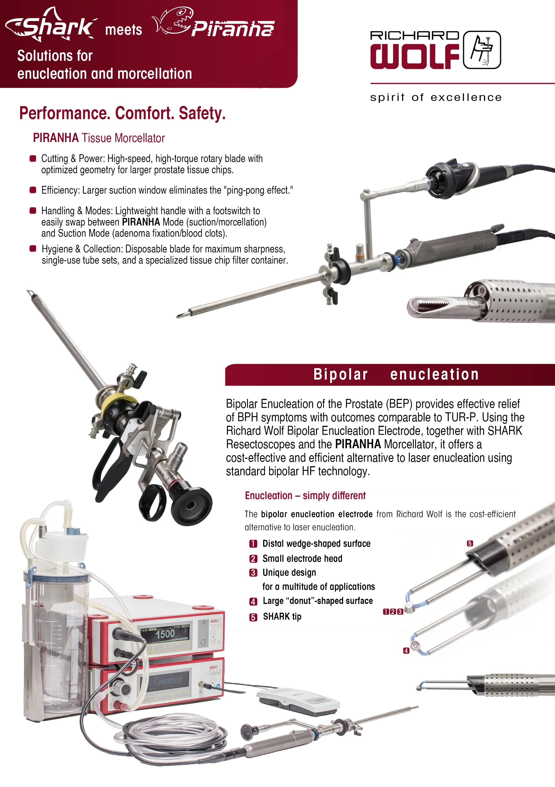
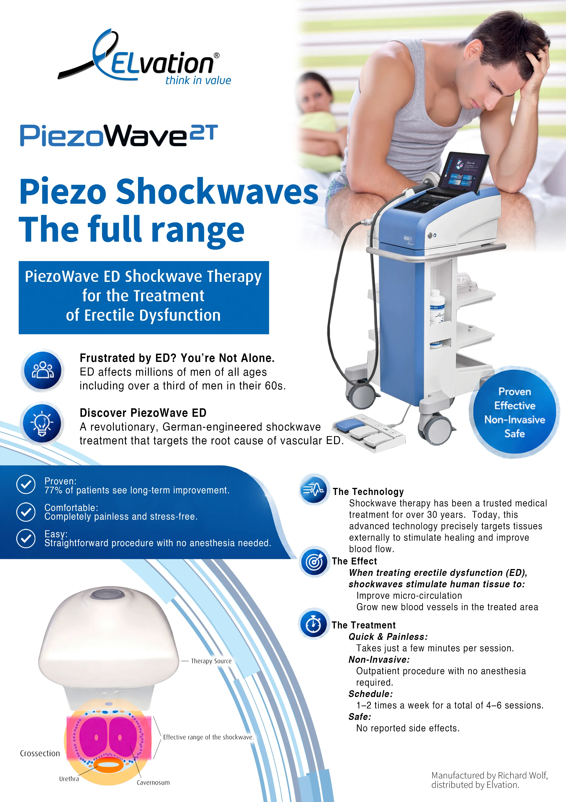
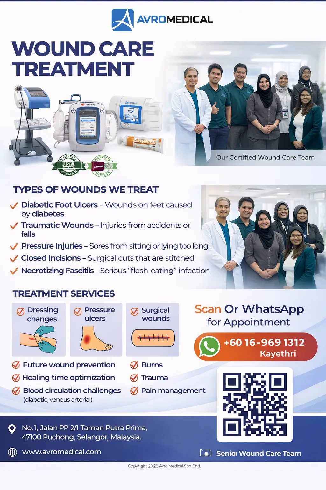
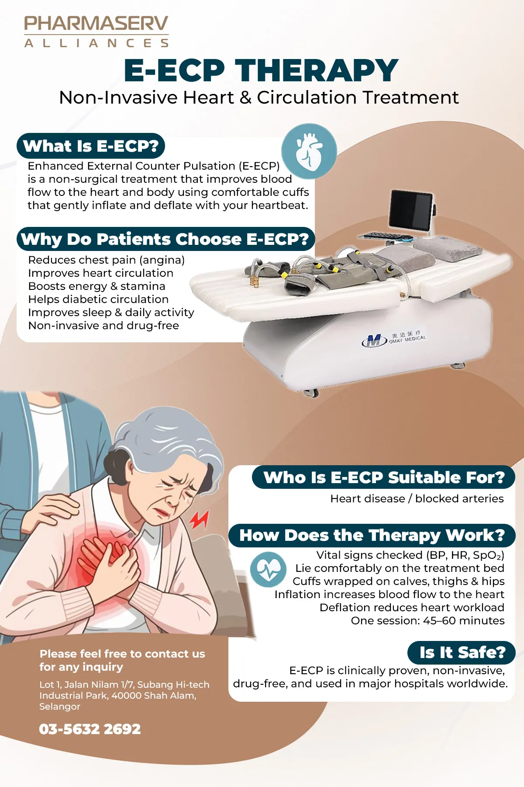
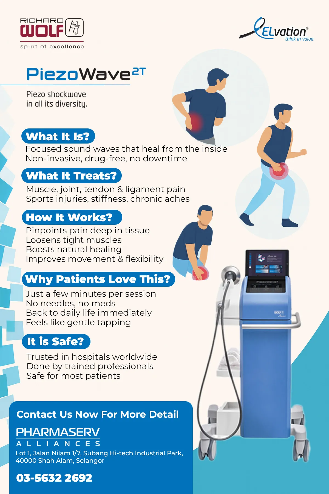
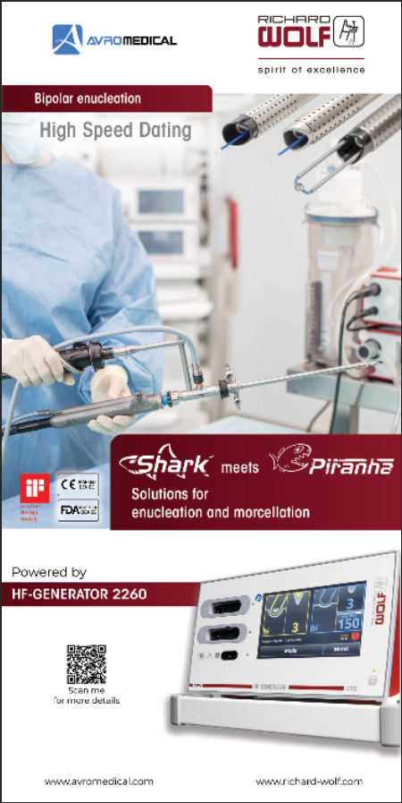
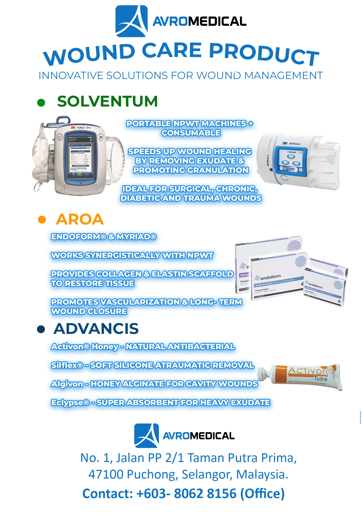
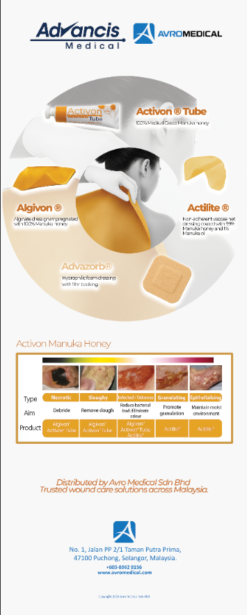
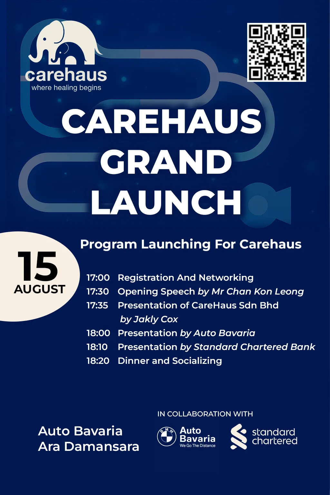
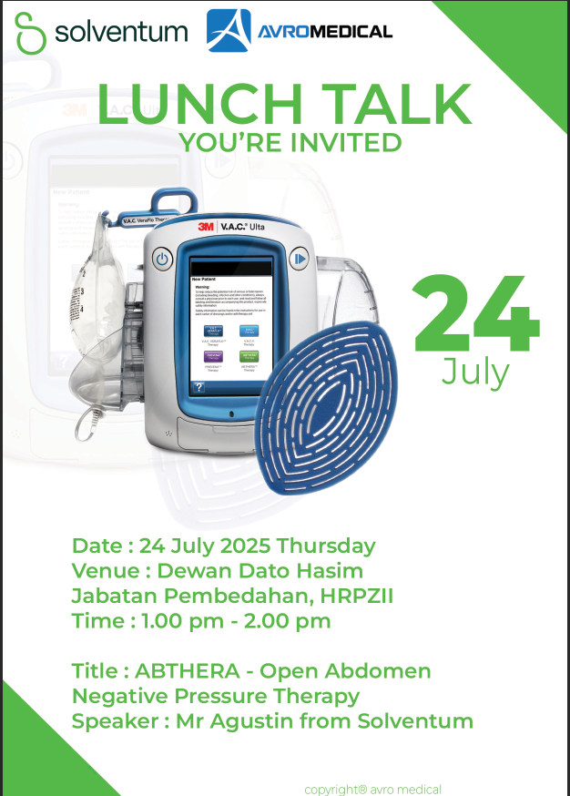
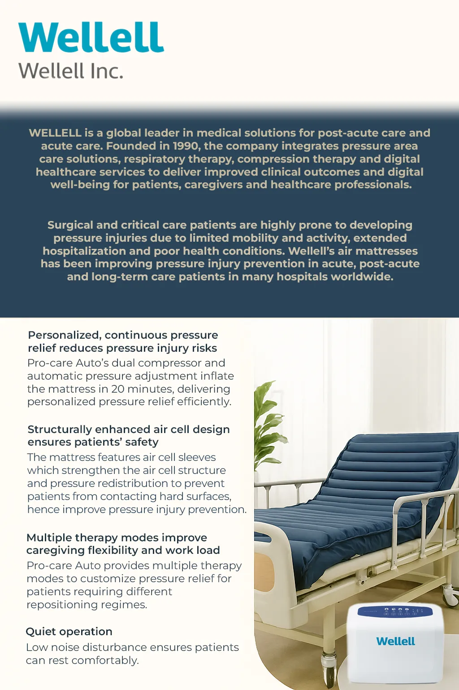
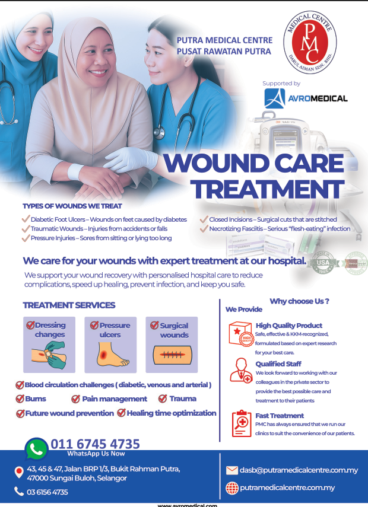
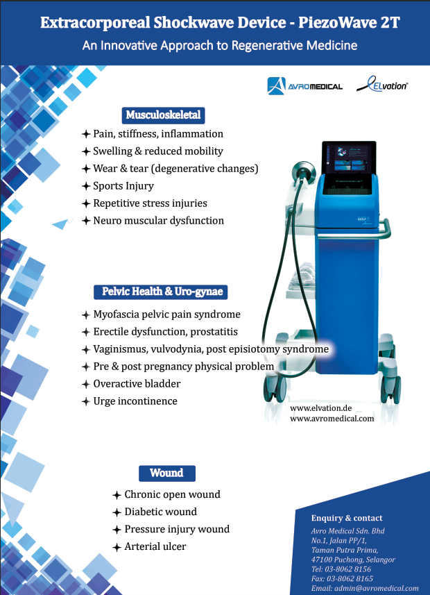
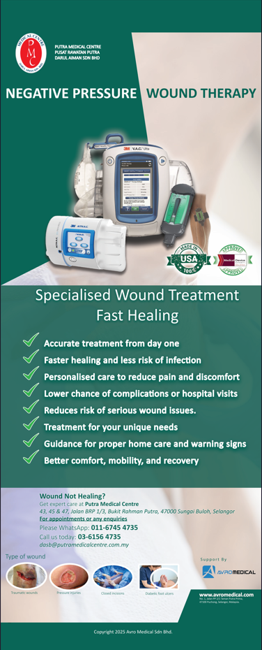